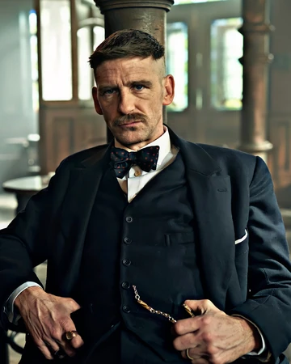
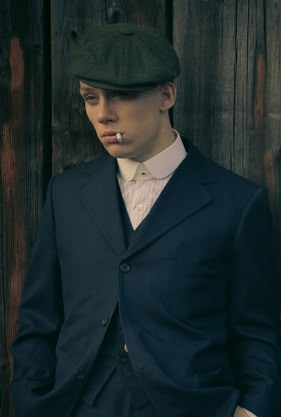

PERSONAJES DESTACADOS
-
Cillian Murphy – Thomas "Tommy" Shelby
Es el líder de los Peaky Blinders. Frío, calculador e inteligente, es un exsoldado traumatizado por la Primera Guerra Mundial. Bajo su mando, la familia Shelby pasa de ser una banda local de apuestas ilegales a convertirse en un imperio criminal con influencia política. Su ambición y capacidad estratégica lo convierten en el personaje central de toda la trama.

-
Paul Anderson – Arthur Shelby
Hermano mayor de los Shelby. Violento, impulsivo y con serios problemas emocionales por las secuelas de la guerra. Aunque es el “segundo al mando” y ejecutor principal, constantemente lucha con su lado más oscuro. Su lealtad a Tommy es inquebrantable, pero su inestabilidad lo convierte en uno de los personajes más impredecibles.
 -
Joe Cole – John Shelby
Otro de los hermanos Shelby, más joven y temerario. Forma parte activa de las operaciones criminales, aunque su papel es más secundario en comparación con Arthur y Tommy. Su carácter impulsivo lo mete en conflictos que afectan a toda la familia.
 -
Helen McCrory – Elizabeth "Polly" Gray
Tía de los Shelby y matriarca de la familia. Es la tesorera y mano derecha de Tommy, además de la figura protectora de todos los hermanos. Astuta, con experiencia en negocios, representa la fuerza femenina dentro del clan. Su papel fue clave hasta la quinta temporada (la actriz falleció en 2021, y su ausencia se notó en la sexta temporada).